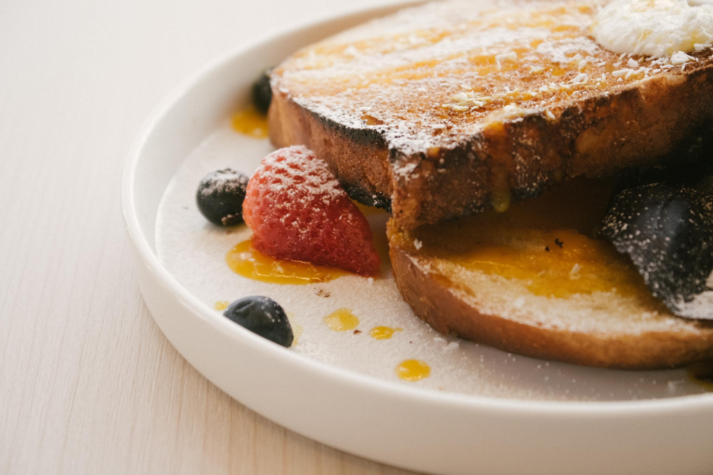

French Toast

Description:
French toast is a sweet and indulgent breakfast treat. Thick slices of bread are soaked in a rich, spiced egg mixture, then pan-fried to golden perfection. With a crispy exterior and soft, custard-like interior, it pairs beautifully with syrup, powdered sugar, or fresh fruit.
Ingredients:
- 2 slices of thick bread (e.g., brioche or challah)
- 2 large eggs
- ½ cup milk (or cream for extra richness)
- 1 teaspoon vanilla extract
- ½ teaspoon cinnamon (optional)
- 1 tablespoon sugar (optional)
- Butter for frying
- Toppings: maple syrup, powdered sugar, or fruit
Method:
- Prepare the egg mixture:n a shallow bowl, whisk together eggs, milk, vanilla extract, cinnamon, and sugar (if using).
- Soak the bread:Dip each slice of bread into the mixture, ensuring both sides are well-coated but not soggy.
- Heat the pan:Melt butter in a non-stick skillet over medium heat.
- Cook the toast:Place the soaked bread slices in the pan and cook for 2-3 minutes on each side until golden brown.
- Serve warm:Top with your favorite toppings, like syrup, powdered sugar, or fresh berries.